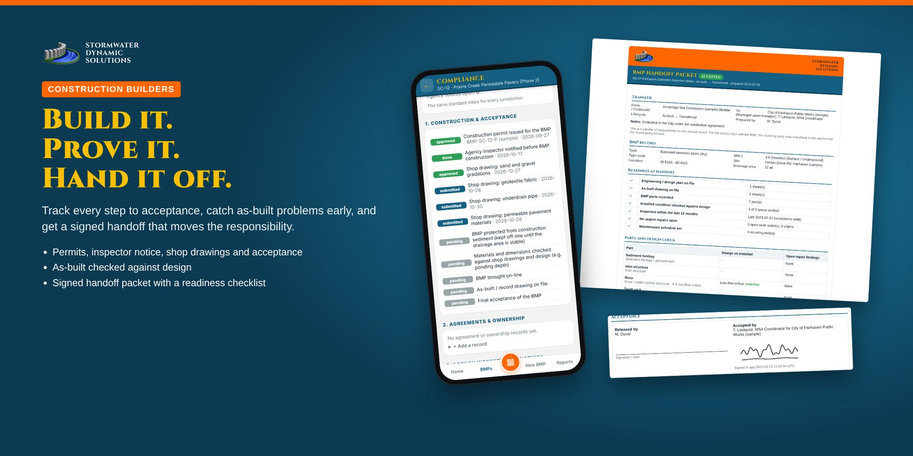
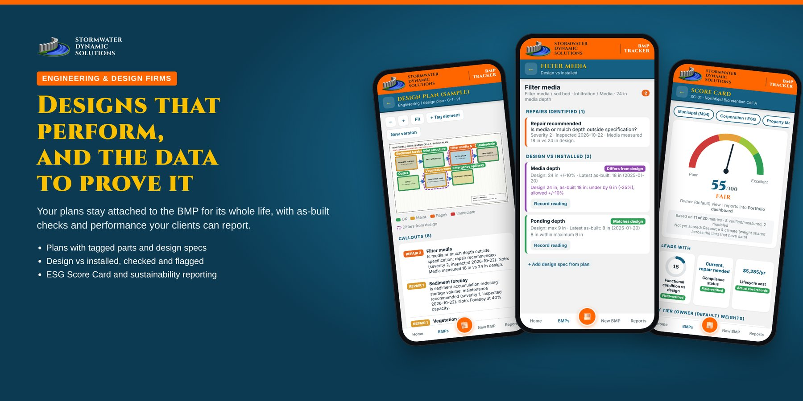

Solutions by organization
Stormwater programs for organizations managing many sites, many assets and many jurisdictions.
Property managers and HOAs
On the SDS BMP Tracker
- Next 12 months of cleanouts and inspections, with costs
- Agency annual reports prepared from your records
- Agency notices tied to the work that resolves them
- Every site and every BMP in one portfolio
Field services
- Routine inspections and agency reporting
- Scheduled maintenance and repairs
- Operations and maintenance plans
- Design issue identification
Municipalities and MS4 programs
On the SDS BMP Tracker
- One standard checklist, rated 0 to 3, in every jurisdiction
- Your required items added on top
- Inspections, notices, work and closure on one record
- Private BMP inventory with enforcement trail
Field services
- MS4 permit compliance programs
- All six minimum control measures
- Stormwater management planning
- Public BMP inspection programs
Construction builders

On the SDS BMP Tracker
- Permits, inspector notice, shop drawings and acceptance
- As-built checked against design
- Signed handoff packet with a readiness checklist
- Records the owner can maintain from day one
Field services
- Erosion and sediment control
- Corrective repair and retrofits
- New facility construction
- Wetland mitigation and native habitat management
Engineering and design firms

On the SDS BMP Tracker
- Plans with tagged parts and design specs
- Design versus installed, checked and flagged
- ESG Score Card and sustainability reporting
- Performance data your clients can report
Field services
- Design issue identification
- Stormwater facility design
- Regulatory consulting
- Operations and maintenance manuals
Industrial facilities
Stormwater compliance documentation and tracking for regulated facilities.
On the SDS BMP Tracker
- Documentation and tracking database
- QR-marked compliance assets
- Inspection and corrective action records
- Agency-ready reports
Field services
- Stormwater Pollution Prevention Plans
- Stormwater management plans
- Water quality sampling
- Staff training